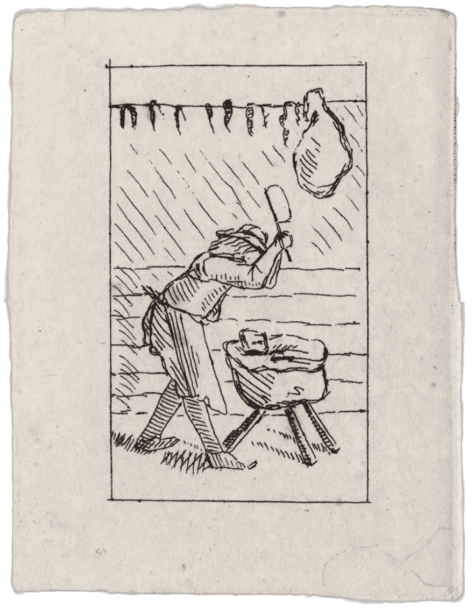
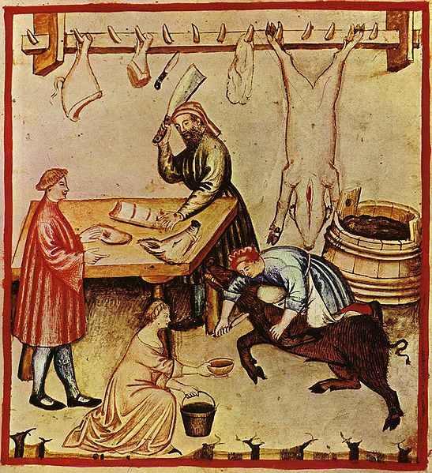
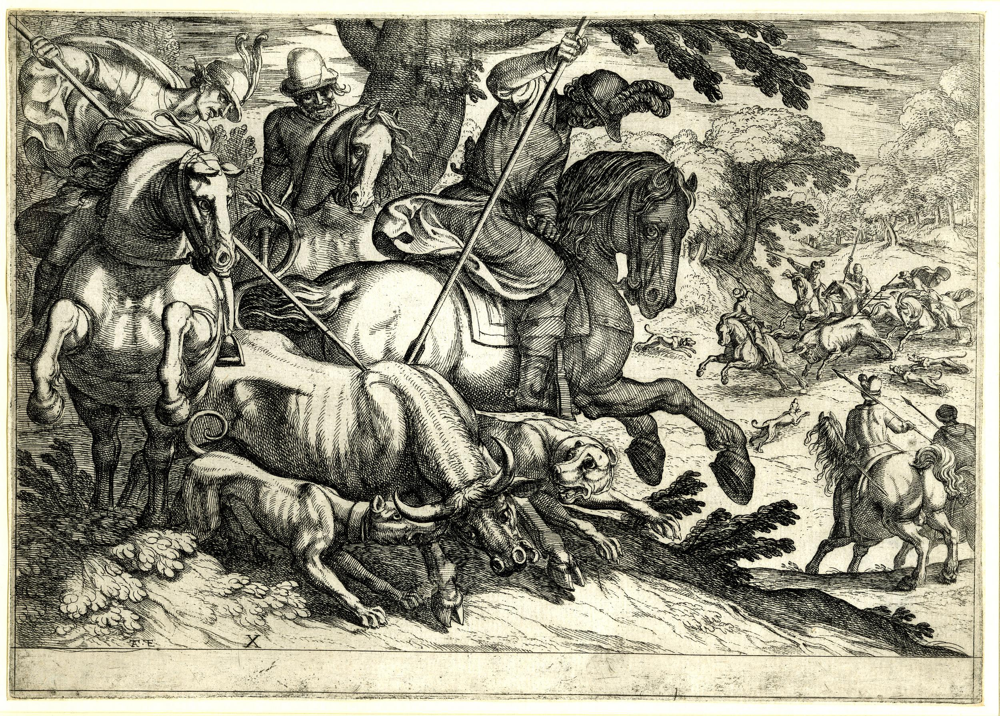
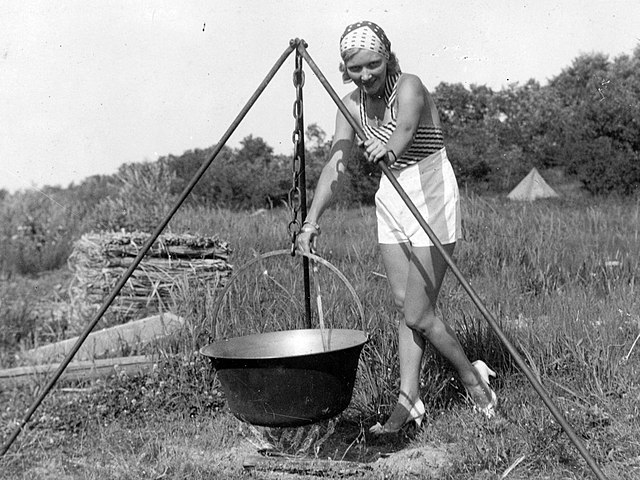

Woodburn Wild Butchery Club
A morte vita est, per gratiam carnificis.
A heritage of butchery
(Northern) Ireland has some delicious fauna. Woodburn Wild Butchery Club aims to reduce as many of these as fall into our grasp into their constituent cuts. In partnership with Knockagh Wild Cooking club, our members cook up a storm in the beautiful countryside surrounding Carrickfergus.
Carrickfergus and its people have a rich history of butchering things, and even people! From the town’s earliest celebrity, John de Courcy, who killed at least thirteen men with a wooden cross, to later periods where meats from a variety of yummy criters (even dogs!) sustained its voracious population.
Join Us…
Come along on the second Thursday of every month (but only if that Thursday is on an even date, in which case, come along on the third Wednesday) for our monthly track and hunt, where we locate and kill suitable wild animals. And then again on the following Saturday morning, when we will butcher the animals and, alongside the Knockagh Wild Cooking Club, roast our kills over an open fire.
It is recommended to bring a packed lunch.
"I've learned so much about butchery and the rapidly diminishing local fauna!"
- Justine P., knife sharpener and happy club member.
Events
Neolithic Hunt
This autumn equinox we will be going on our biannual Neolithic Hunt. Come along with rudimentary equipment and impractical clothes and see how many beast we can fell.
Here are Barry and Billy posing in their fabulous hides from last year's hunt. Together they captured and slaughtered 0 beasts!

Our Partner club
Knockagh Wild Cookery ClubIf hunting and wild butchery isn't for you, and you'd rather merely profit from the labours of others, then consisder trying our sister organisation, the Knockagh Wild Cookery Club. No need to feel like you're missing out, however, they're just as impractical and unhygeinic as us!
